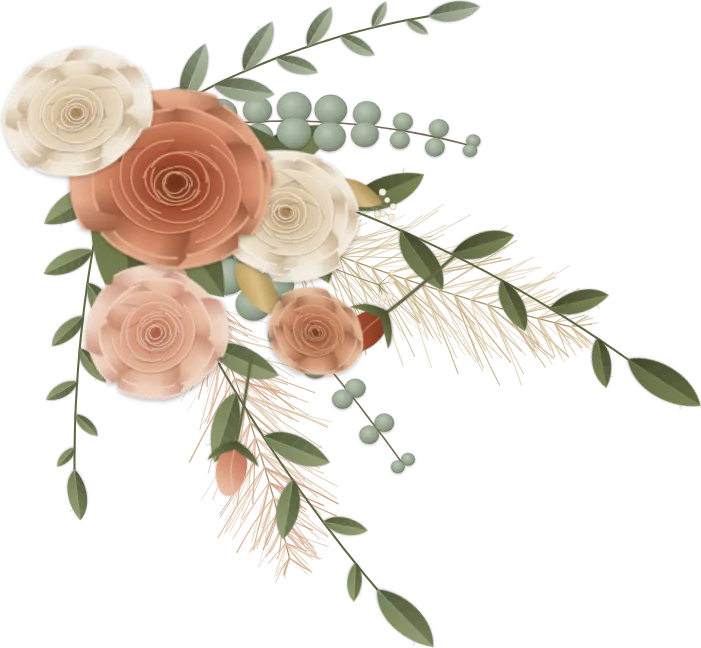
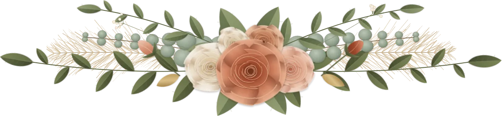
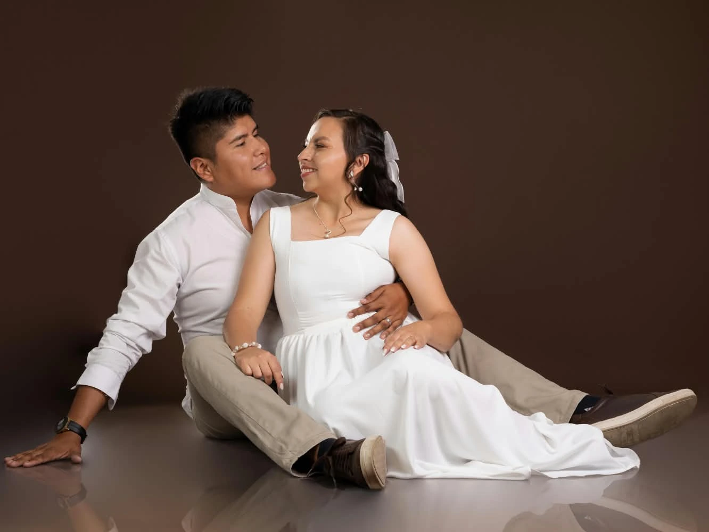
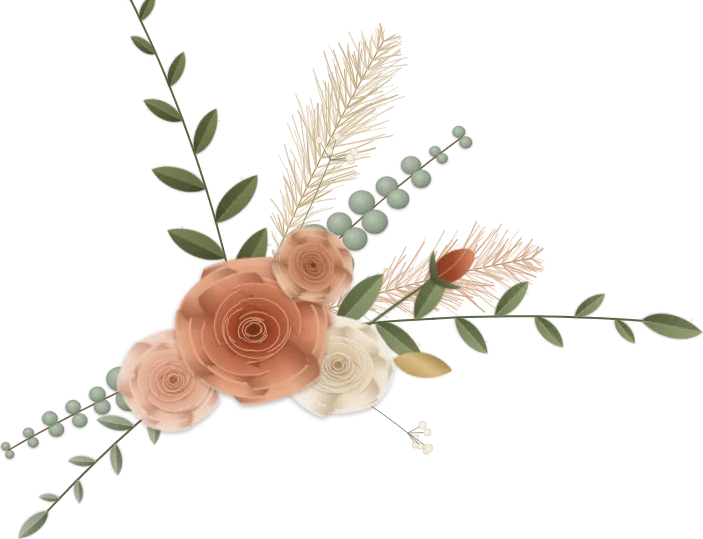
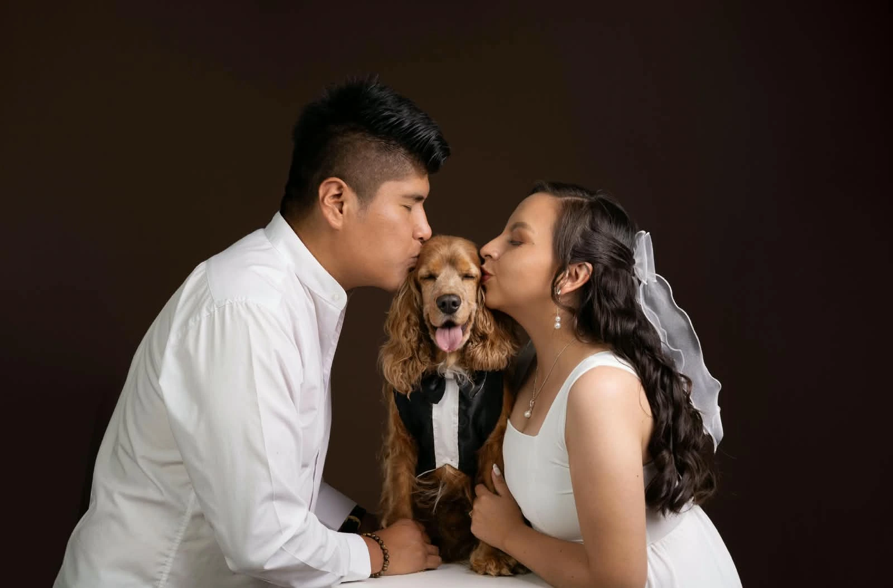

Ceremonia religiosa
Parroquia San Ildefonso
Quillacollo · Cochabamba
14:30
Cómo llegar
CON TODO NUESTRO AMOR
Dos caminos
que hoy se vuelven uno
SÁBADO · 12 DE DICIEMBRE · 2026
Toca el sello o el botón · con música se siente aún más bonito
¡NOS CASAMOS!
y queremos que seas parte de nuestra historia



“Las muchas aguas no podrán apagar el amor, ni lo ahogarán los ríos.”Cantares 8:7
Hay amores que se encuentran sin buscarse y deciden quedarse para siempre. Con la bendición de Dios y de nuestros padres, hemos decidido unir nuestras vidas en matrimonio, y nada nos haría más felices que compartir ese momento contigo.
Padres del novio
Jose Monroy Lopez
Sonia Lopez Auza
Padres de la novia
Andres Mejia Almanza
Sonia E. Mercado Saavedra
RESERVA ESTE DÍA
Diciembre 2026
¡Hoy es el gran día!
Guardar en mi calendarioDÓNDE NOS VEMOS
Ceremonia religiosa
Quillacollo · Cochabamba
14:30
Cómo llegarRecepción social
Quillacollo · Cochabamba
Te esperamos después de la ceremonia
Cómo llegarNUESTRA HISTORIA

Contigo, cualquier lugar es hogar
ASÍ VIVIREMOS ESTE DÍA
Ceremonia religiosa
Acto protocolar
Cena
Torta
Bouquet y liga
Despedida
NOS ACOMPAÑAN CON CARIÑO
Padrinos de Religión
Royer Wilson Sejas Rocha
Jhovana Mejia Mercado
Padrinos de Civil
Rolando W. Montecinos Fuentes
Karina Sejas Rocha
Padrinos de Aros
Patricia A. Monroy Lopez
David Vásquez Garcia
Padrinos de Torta
Mauro Almanza Vera
Susan F. Gonzales
Madrina de Foto y Video
P. Marcela Monroy Lopez
Madrina de Recuerdos
Claudia C. Monroy Lopez
Madrina de Altar
Aleyda Maldonado Coca
Madrina de Velo y Bouquet
Angelica Fernandez Vidal
CÓDIGO DE VESTIMENTA
Damas
Vestido largo de gala
Varones
Traje formal y corbata
El color blanco y los tonos claros están reservados exclusivamente para los novios.
Aunque apreciamos mucho a sus pequeños, hemos decidido celebrar nuestra boda sin niños.
Gracias por comprender
SUGERENCIA DE REGALO
El mejor regalo es tu presencia. Pero si deseas hacernos un detalle, puedes ayudarnos a alimentar nuestra alcancía para nuestra luna de miel y nuestro nidito de amor.
¡Gracias!
TU PRESENCIA ES NUESTRO MEJOR REGALO
Por favor, confírmanos tu asistencia por WhatsApp. Así podremos preparar todo con mucho cariño para ti.
Confirmar asistencia+591 65777426